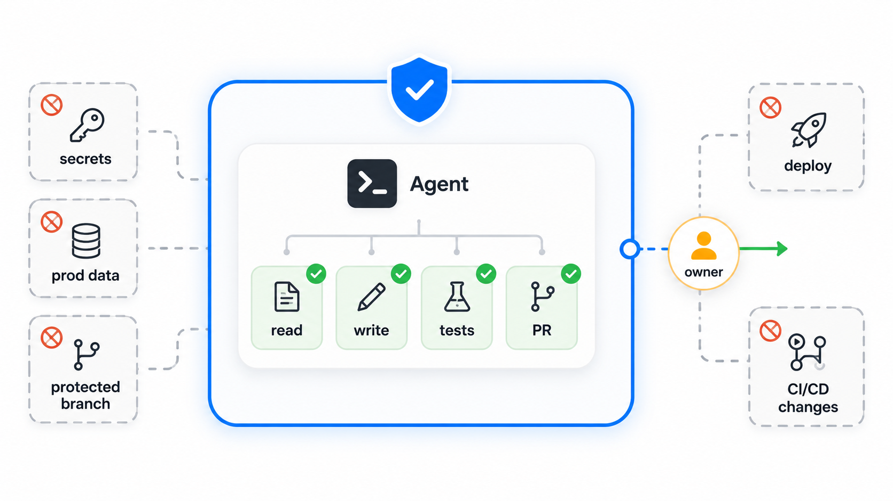
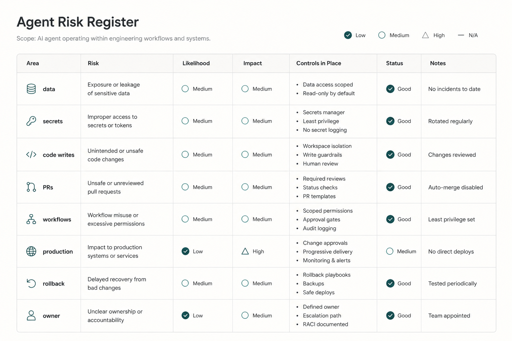
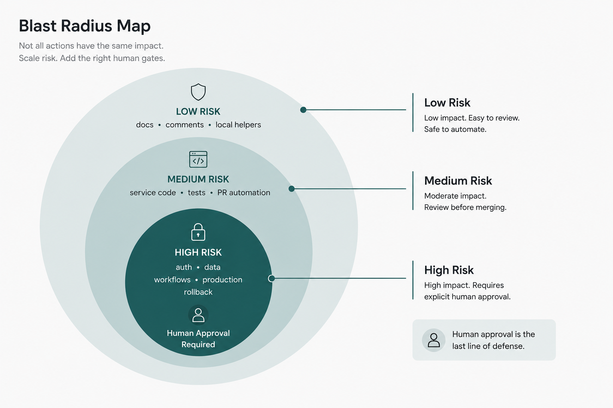

The demo goes well.
An AI agent picks up a small issue, reads the repository, changes the right files, runs tests, and opens a pull request. The diff is clean. The summary is useful. The team can immediately see the appeal.
Then someone asks the better question:
What else is this agent allowed to do?
That is where the real risk discussion begins.
An assistant that suggests code is one thing. You can accept the suggestion, reject it, or rewrite it.
An agent that can act is different.
It may read files, inspect history, edit code, run commands, create a branch, update tests, open a pull request, or interact with workflow tools. In some environments, it may also touch infrastructure configuration, deployment scripts, secrets-adjacent files, or production-adjacent workflows.
At that point, the question is no longer only:
Is the generated output good?
The better question is:
What is this agent allowed to touch?
Before teams let AI agents act inside delivery workflows, they need a simple risk register.
Not a heavy compliance document.
A practical engineering register that says:
- what the agent can access
- what the agent can change
- what is off-limits
- what evidence is required
- who reviews the result
- who remains accountable
The purpose is not to block agent use.
The purpose is to make agent use safe enough to be useful.
Before allowing AI agents to act, teams must define what they can touch, what they cannot touch, and who remains accountable.
Agents are not just better assistants
The difference between an assistant and an agent is not the model name.
It is action.
A coding assistant may suggest a function. A coding agent may change five files, run tests, create a branch, and prepare a pull request.
A documentation assistant may draft release notes. A documentation agent may update repository docs across several folders.
A review assistant may comment on a diff. A review agent may inspect related files, flag risks, and request changes.
This is useful.
It also increases the blast radius.
OpenAI's Codex documentation describes sandboxing and agent approvals as controls around file access, command execution, network access, and when the agent must ask before acting. GitHub's Copilot coding agent announcement shows agents working through branches and pull requests.
These are not just chat interactions.
They are delivery workflow interactions.
That means teams need to assess the agent as part of the engineering system.
The five drivers of agent risk
Agent risk depends on five practical factors.
First: permission.
Can the agent read only public repository files, or can it access private code, secrets-adjacent configuration, customer data, logs, tickets, and internal documents? Can it write files? Can it run commands? Can it push branches? Can it modify workflows?
Second: context quality.
Does the agent have current architecture guidance, business rules, test expectations, ownership information, and constraints? Or is it acting from stale docs, vague tickets, and examples copied from old code?
Third: action scope.
Is the agent limited to one folder and one kind of change? Or can it roam across services, dependencies, scripts, workflow files, and infrastructure?
Fourth: review depth.
Will a human review only the final diff? Will tests run? Will security-sensitive areas require code owner approval? Will the reviewer see assumptions, touched files, test evidence, and remaining risk?
Fifth: blast radius.
What happens if the agent is wrong? A typo in internal documentation is one thing. A change to authentication, payment limits, data deletion, deployment workflows, or incident automation is another.
These five factors matter more than a generic statement like "we use agents."
The same agent can be low-risk in one workflow and high-risk in another.
The agent risk register
A useful register can be small.
It should not become a document nobody updates.
It should be close to the workflow where the agent is enabled: repository instructions, team working agreements, platform documentation, PR templates, or an internal developer portal.
Here is a practical version.

| Risk area | What to check | Safer default |
|---|---|---|
| Data access | What code, docs, tickets, logs, and customer data can the agent read? | Start with least privilege and exclude sensitive data unless clearly needed. |
| Secrets | Can the agent read secrets, tokens, env files, credentials, or logs containing secrets? | Do not expose secrets. Use secret scanning and redaction. |
| Code writes | Which files can the agent edit? | Limit write access to the task scope. Keep shared libraries and sensitive areas gated. |
| Branch creation | Can the agent create branches or commits? | Allow branches before allowing merges. Require human review before protected branches. |
| PR automation | Can the agent open, update, or summarize PRs? | Allow PR creation, but require human approval and clear evidence. |
| Workflow updates | Can the agent modify CI, actions, deployment scripts, or policy files? | Treat workflow changes as high-risk and require owner review. |
| Dependencies | Can the agent update packages or lockfiles? | Require dependency checks, security scanning, and reviewer approval. |
| Production impact | Could the change affect live users, data, auth, billing, or operations? | Add stronger review, test evidence, rollout, and monitoring. |
| Security exposure | Could the change affect auth, authorization, encryption, input handling, or secrets? | Require security review or code owner approval. |
| Rollback readiness | Is there a way to detect and reverse a bad change? | Require rollback notes for production-adjacent changes. |
| Ownership | Who owns the agent's output and final decision? | Name a human owner before the agent acts. |
This is not meant to stop agents from being useful.
It is meant to make their usefulness safer.
Data access comes first
Many teams start by asking what the agent should do.
Start with what it can see.
An agent with access to repository code has one risk profile. An agent with access to production logs, customer records, support tickets, internal strategy docs, and secrets-adjacent configuration has another.
OWASP's Top 10 for LLM Applications highlights risks such as sensitive information disclosure, prompt injection, insecure tool design, and excessive agency. Its Agentic AI guidance is useful for thinking about tool access, permissions, memory, and human oversight.
For delivery teams, the practical lesson is direct: data exposure and tool access should be reviewed before autonomy.
Ask:
- Does this agent need customer data?
- Does it need production logs?
- Does it need secrets-adjacent files?
- Does it need access to tickets or internal docs?
- Can retrieved context contain instructions that conflict with repository rules?
- How are sensitive outputs prevented from landing in PRs, logs, or comments?
If the agent does not need the data, do not give it the data.
Least privilege is not old-fashioned.
It is how you make agents usable without giving them the whole house.
Write access changes the risk
Read-only agents are easier to reason about.
Write-capable agents require more care.
A code-writing agent can make a focused fix. It can also update unrelated files, change behavior outside the story, introduce a dependency, reformat a large area, or modify a shared helper used by other services.
This is why action scope matters.
Good agent instructions should define:
- files or folders likely in scope
- areas that are off-limits
- whether public APIs can change
- whether dependencies can change
- whether migrations are allowed
- whether generated tests are required
- when the agent must stop and ask
Context helps the agent understand.
Constraints help the agent behave.
Branches and pull requests are safer than direct changes
An agent creating a branch is usually safer than an agent changing a protected branch.
A branch gives the team a review surface.
A pull request gives the team a place for evidence:
- what changed
- why it changed
- what the agent assumed
- which files were touched
- which tests were run
- what risk remains
- who should review
GitHub's branch protection documentation is a useful reminder that normal engineering controls still matter: required reviews, status checks, code owner approval, and merge restrictions.
The agent can prepare the work.
The workflow should preserve human approval.
Workflow updates deserve special treatment
Some files are more dangerous than they look.
CI configuration, GitHub Actions, deployment scripts, infrastructure code, policy files, release automation, and package publishing workflows can change what the delivery system does.
An agent that modifies application code is one risk.
An agent that modifies the pipeline that validates and deploys the code is another.
Treat workflow updates as high-risk by default.
Require owner review. Require clear explanation. Require tests where possible. Require a rollback path.
If the agent can change the guardrails, the guardrails need protection from the agent.
Production impact changes the register
The register should scale with blast radius.

A small documentation update may need light review.
A refactor inside a low-risk internal tool may need tests and a normal PR review.
A change to authentication, authorization, billing, customer data export, data deletion, deployment automation, incident response, or database migration needs stronger controls.
Ask:
What happens if this is wrong?
If the answer is "a typo appears in an internal page," keep the process light.
If the answer is "customers cannot log in," "payments are calculated incorrectly," "data is deleted," or "rollback is unclear," slow down.
That is not bureaucracy.
That is engineering judgment.
Rollback is part of permission
Teams often discuss what the agent can do before they discuss how to undo it.
That is backwards for production-adjacent work.
Before an agent changes something with operational impact, the team should know:
- how the change will be tested
- how it will be released
- how it will be monitored
- what signal indicates failure
- how rollback works
- who owns the rollback decision
The NIST Secure Software Development Framework is useful here because it reinforces the value of secure development workflows, review, testing, and vulnerability handling. For AI agents, the same engineering logic applies: generated changes still need trustworthy validation and recovery paths.
An agent should not get broad action scope in an area where the team cannot recover confidently.
Ownership must be explicit
The most dangerous risk in an agent workflow may be unclear ownership.
If an agent creates a PR, who owns the change?
If it updates tests, who owns whether the tests prove the right behavior?
If it changes a deployment workflow, who owns release safety?
If it modifies a security-sensitive path, who owns risk acceptance?
The answer cannot be "the agent."
GitHub's responsible-use guidance says Copilot code review should supplement human reviews, not replace them. That same principle applies more broadly to agent workflows.
The agent can act.
The human team remains accountable.
For every enabled agent workflow, name the human owner or role:
- product owner for business intent
- tech lead for design and maintainability
- code owner for sensitive areas
- security reviewer for security risk
- release owner for production readiness
- on-call owner for operational impact
Agent output can be automated.
Accountability cannot.
How to use the register
Use the register before enabling the agent, not after something goes wrong.
For each workflow, fill out:
| Field | Example |
|---|---|
| Agent purpose | Draft implementation for bounded backlog items |
| Allowed access | Repository code, linked story, relevant docs |
| Disallowed access | Secrets, production data, unrelated internal docs |
| Allowed actions | Edit files in approved folders, run tests, open PR |
| Disallowed actions | Modify CI/CD, dependencies, public APIs, production config |
| Required evidence | Summary, assumptions, touched files, tests run, risk notes |
| Required review | Code owner approval for touched area |
| Rollback path | Feature flag or revert plan for production changes |
| Human owner | Named engineer or role |
Then review it periodically.
Agent capabilities change. Repository structure changes. Team ownership changes. Risk changes.
A register that is never revisited becomes knowledge debt.
Three practical takeaways
First, assess agents by what they can do, not only by how good their answers look.
Second, define permission, context, scope, review, and blast radius before enabling action.
Third, keep human accountability explicit. The agent may create the branch, update the code, run the tests, and open the PR. A human still owns the decision to accept the change.
AI agents can be useful delivery tools.
But they need boundaries.
Before letting an agent act, decide what it can touch, what it cannot touch, and who is accountable when the work reaches the real system.